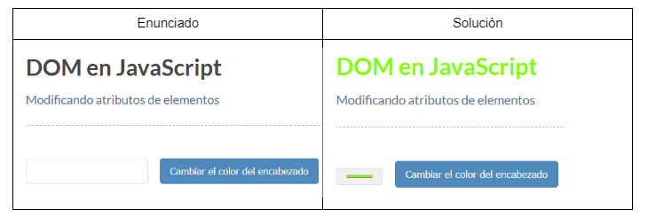
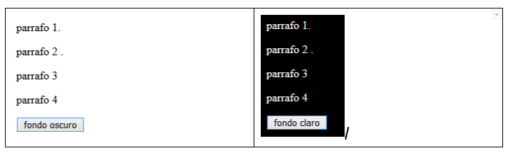
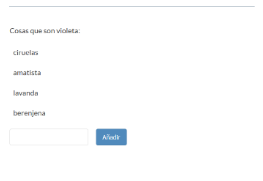
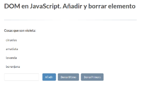
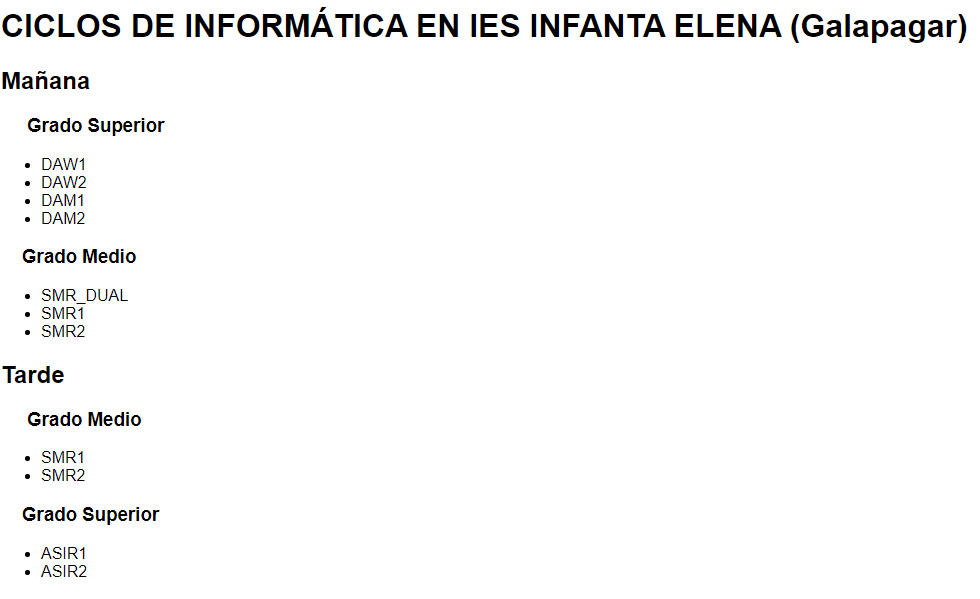
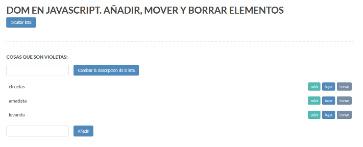

Realiza las modificaciones necesarias para que, una vez seleccionado el color del input, después de pulsar el botón “Cambiar el color del encabezado”, se modifique el encabezado H1. Resuelve el ejercicio obteniendo el encabezado por Id y por TagName.
Realiza un script que tenga una clase css llamada inverso, en la que asigne el color de fondo a negro y el color del texto a blanco. Inicialmente la página tendrá un texto libre con el fondo blanco y el color del texto negro (colores por defecto), además deberá tener un botón, cuyo texto será Fondo Oscuro. Al pulsar sobre el botón deberá asignar al body de la página los valores de la clase inverso y el texto del botón será Fondo Claro. Cuando pulse sobre el botón con el texto Fondo Claro, revertirá los cambios. Ejemplo: 
Realiza las modificaciones necesarias para que añada el elemento que se introduzca en el input cuando se haga click en el botón Añadir. Respeta las clases css creadas para acceder a los objetos.
Realiza las modificaciones necesarias sobre el ejercicio anterior para añadir dos botones más para borrar primer y último elemento de la lista. Puedes utilizar los ficheros que están dentro de este
A partir del fichero ejercicio05.html".html se quiere que, cuando se haga click en cualquiera de los h3, recorra su árbol DOM y muestre la información correspondiente, Ejemplo:
Si pulsamos en el H3 del primer Grado Medio se mostrará al final de la página:
Has elegido Grado Medio que se imparte en turno de mañana
Los nº de grupos que se imparten son 3: SMRDUAL, SMR1 y SMR2
donde: Grado Medio es el texto de H3, tarde es el identificador del div que contiene la lista y los grupos son los distintos elementos de la lista. Utiliza target para extraer el elemento (h3) al que se hace el evento (click)
Realiza las modificaciones necesarias sobre ejercicio06.js para que funcione correctamente.
En la página se podrá Ocultar/Mostrar la información posterior a la línea divisoria. Se podrá cambiar la descripción de la lista (Inicialmente COSAS QUE SON VIOLETA). Deberán funcionar los botones de subir, bajar y borrar elementos de la lista. Se podrá añadir un nuevo elemento a la lista (se colocará al final de la lista y deberá también los botones de subir bajar y borrar)